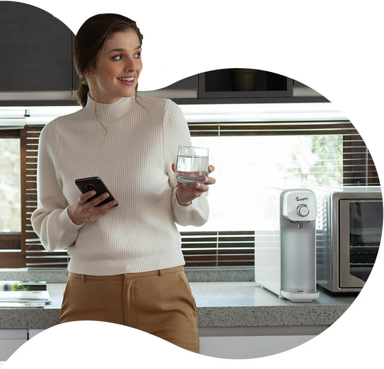

Rotoplas en Corto
Empresa líder en América que provee soluciones de agua, incluyendo productos y servicios para el almacenamiento, conducción, mejoramiento, tratamiento y reciclaje. Con más de 40 años de experiencia en la industria y 19 plantas en operación en América, Rotoplas tiene presencia en 14 países y un portafolio que incluye 27 líneas de productos, una plataforma de servicios y un negocio de comercio electrónico. A partir del 10 de diciembre de 2014, Grupo Rotoplas cotiza en la Bolsa Mexicana de Valores bajo la clave de pizarra AGUA.
1. Plan de crecimiento sostenible: duplicar ventas en 5 años
Plan 2020-2025:
- 2x ventas (vs 2020)
- Margen EBITDA Aj. ≥ 20%
- Apalancamiento Deuda Neta / EBITDA Aj. ≤ 2.0x
- ROIC ˜20%
2. Líder en materia de sustentabilidad e innovación – Rotoplas opera de manera sustentable y es aliado de sus clientes para reducir su impacto ambiental
- A través de sus productos y servicios, promueve la resiliencia de la población ante el cambio climático y la escasez hídrica
- Desarrolla soluciones para ayudar a sus clientes a ser más sustentables (i.e. sustituir botellas de plástico con bebbia, servicio de purificación residencial o con plantas de tratamiento que reutilizan el agua evitando la contaminación del subsuelo)
- Enfoque de capitalismo consciente: persona, planeta y beneficio económico al mismo nivel de prioridad
- Enfoque en la digitalización del agua, evolucionando el portafolio de productos y servicios a soluciones inteligentes que incorporen data & analytics para un uso más eficiente del recurso
- Primer emisor de un bono sustentable en América Latina en 2017 AGUA* forma parte de los índices sustentables DJSI MILA Pacific Alliance y BMV Total Mexico ESG
3. Metas claras en materia de cambio climático y diversidad
- Ser una compañía carbono neutral para el 2040
- Incrementar del 23% al 30% la participación de mujeres en la plantilla laboral para el 2025
4. Historia de transformación: Rotoplas duplicó su ROIC en 2 años
- En agosto 2019 se inició un programa de transformación denominado Flow
- Objetivo Flow: incrementar el ROIC y crear valor económico manteniendo un impacto positivo en la sociedad y en el medio ambiente
- De junio 2019 a septiembre 2021 se logró incrementar el ROIC 7.8 puntos porcentuales, pasando de 7.9% a 15.7%
- Flow evolucionó de un programa de transformación a la forma de operación diaria
5. A pesar de ser una compañía en crecimiento, Rotoplas paga dividendos anualmente
- A través de reembolsos de capital en efectivo y en acciones, Rotoplas ha pagado a sus accionistas un yield superior al 7% en los últimos dos años
- Los últimos 6 años ha pagado anualmente reembolsos de capital superior a los MXN $0.20
¿Por qué invertir en Rotoplas?
- Gran potencial de crecimiento de la industria del agua a nivel global ante el cambio climático y la escasez hídrica
- Alta demanda por soluciones descentralizadas de agua por una infraestructura hídrica rebasada por el crecimiento poblacional en América
- Marcas líderes en los 14 países en los que opera
- Estrategia clara y alcanzable con el Plan de crecimiento sostenible 2021-2025
- Creación de valor tripartita: personas, planeta y prosperidad del negocio
- Fortaleza del balance y bajo nivel de apalancamiento
- Equipo de liderazgo con trayectoria probada